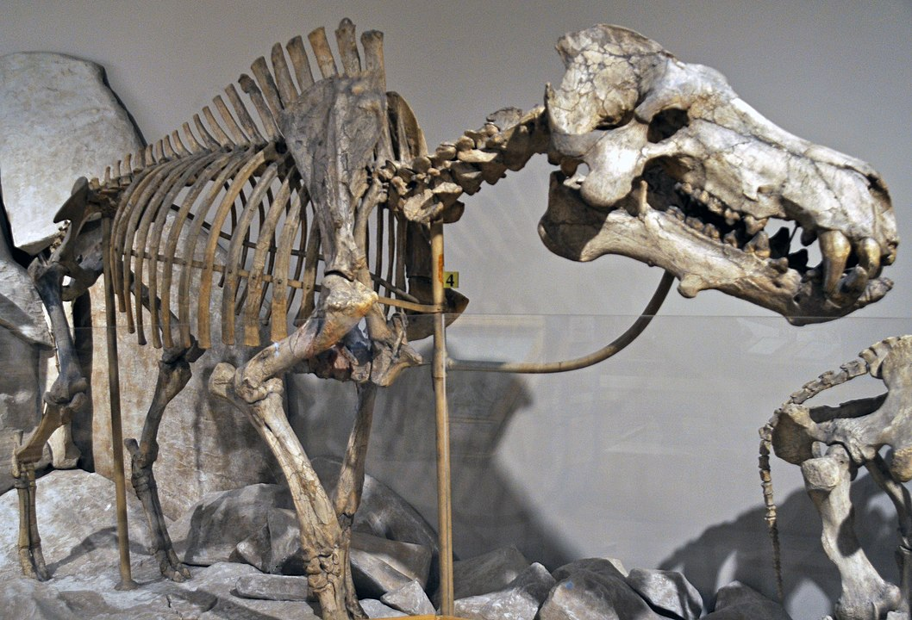

Daeodon
Lợn nguyên thủy thế Trung Tân
Tổng quan
Thế
Miocene
Họ
Entelodontidae
Chi
Daeodon
Dài
3.6 m
Cao
2 m
Nặng
450 kg
Thức ăn


Daeodon là một chi đã tuyệt chủng của động vật móng guốc có ngón chân Entelodontidae. Loài điển hình là Daeodon shoshonensis, được Cope mô tả bằng một mẫu gốc rất đáng ngờ.
Nguồn: wikipedia.org
Phân bố
Khu vực Bắc Mỹ
Thông tin thêm về Daeodon
Kỷ nguyên và phân bố
Hóa thạch Daeodon cho thấy chúng sống vào cuối thế Oligocen và đầu thế Miocen, khoảng 23 đến 20 triệu năm trước tại nơi ngày nay là Bắc Mỹ. Daeodon sống ở đồng cỏ rộng lớn của những khu vực này. Môi trường sống của chúng trải dài từ lòng sông đến những vùng khô hạn hơn.
Tên khoa học
Daeodon - "răng hủy diệt", được đặt tên bởi Edward Drinker Cope năm 1879, bắt nguồn từ tiếng Hy Lạp trong đó daios có nghĩa là "thù địch" hoặc "đáng sợ" và odon có nghĩa là "răng". Ngoài ra chúng còn có tên gọi khác là Dinohyus - "con lợn khủng khiếp" được đặt tên bởi Peterson vào năm 1905. Theo các quy tắc quốc tế quản lý việc đặt tên cho động vật, tên cũ nhất được ưu tiên theo mặc định. Điều này có nghĩa là Dinohyus hiện là một từ đồng nghĩa với Daeodon.
Kích thước
Daeodon là loài Entelodont lớn nhất được biết đến, các cá thể trưởng thành được biết có hộp sọ dài khoảng 90 cm (3 ft) và tổng chiều dài cơ thể khoảng 3.6 mét, cao khoảng 2 mét (1,77 mét nếu tính đến vai). Cân nặng ước tính đến 450 kg.
Ngoại hình
Nó được phân biệt với các loài Entelodonts khác bởi một loạt các đặc điểm răng độc đáo, hình dạng và kích thước tương đối nhỏ của các mặt bích xương gò má trong hộp sọ của nó so với Archaeotherium, và kích thước nhỏ của nốt sần ở cằm, cũng như các đặc điểm của nó.
Giống như các loài entelodonts khác, các chi của nó dài và mảnh khảnh với các xương của chân trước hợp nhất với nhau và chỉ có hai ngón chân trên mỗi bàn chân. Nó cũng có một cái cổ được cấu tạo tương đối nhẹ so với kích thước của đầu, trọng lượng của nó chủ yếu được hỗ trợ bởi các cơ và gân gắn với các gai cao của đốt sống ngực , tương tự như gai của bò rừng và tê giác ngày nay.
Chế độ ăn và săn mồi
Theo suy đoán của các nhà khoa học, Daeodon là loài ăn tạp giống như tất cả các loài entelodonts khác. Các mẫu men gợi ý ăn các loại hạt, rễ và dây leo, cũng như thịt và xương. Sự giống nhau bề ngoài với Peccaries, hà mã và gấu ngụ ý rất nhiều về loại cây Daeodon có thể đã ăn. Mùa khô ở Bắc Mỹ vào thời điểm đó có thể rất khắc nghiệt, vì vậy họ có thể đã bổ sung lượng nước bằng cách ăn nho.
Mức độ ăn thịt của chúng còn đang được tranh luận, nhưng tình trạng mòn răng cho thấy chúng chuyên nghiền xương và xé thịt, và vết cắn trên xương chalicothere cho thấy chúng đã săn bắt hoặc ăn xác động vật ăn cỏ lớn. Sự không chắc chắn trong chế độ ăn uống của chúng cho thấy chúng có khả năng là loài ăn tạp cơ hội tương tự như gấu, ăn bất cứ thứ gì chúng cần tùy thuộc vào hoàn cảnh.
Khám phá
Những hóa thạch của Daeodon đầu tiên được tìm thấy ở Oregon. Nhưng mãi về sau, bắt đầu từ những năm 1940, các nhà nghiên cứu mới bắt đầu đưa ra một bức tranh hoàn chỉnh hơn về mô tả, đời sống và quá trình tiến hóa của loài động vật này.
Một bộ xương hoàn chỉnh ban đầu được gọi là Dinohyus đã được phát hiện trong các lớp hóa thạch Agate của Nebraska. Sau đó, các nhà nghiên cứu nhận ra rằng nó khớp với các mẫu vật khác của loài mà họ đặt tên là Daeodon. Bởi vì cách đặt tên sớm nhất được sử dụng cho tất cả các cách đặt tên tiếp theo, nên bộ xương mới được phân loại lại thành Daeodon.
